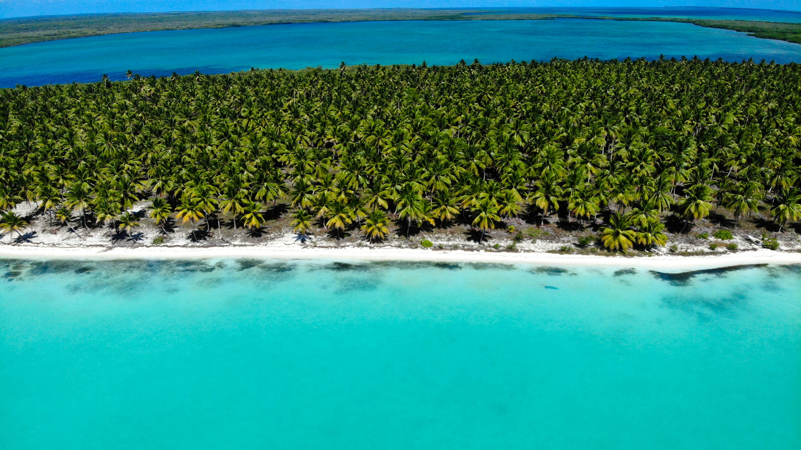

Explore Punta Cana
Punta Cana offers a variety of activities for visitors who want to relax, explore, or experience the Caribbean. Here are some popular places and activities to consider during your visit!
Bávaro Beach

Bávaro Beach is one of the most popular beaches in Punta Cana. Visitors can relax on the sand, swim in the warm Caribbean water, or simply enjoy the tropical scenery. It is a great place to spend a relaxing day by the ocean.
Saona Island

Saona Island is a popular destination for visitors looking to explore beyond Punta Cana. A trip to the island offers beautiful beaches, clear water, and an opportunity to experience the natural beauty of the Dominican Republic. Visitors usually reach the island through an organized boat excursion.
Boat Tours

Boat tours are another popular way to experience Punta Cana. Visitors can spend time on the water while enjoying the coastline and tropical surroundings. Depending on the excursion, tours may include sightseeing, snorkeling, music, and stops at different locations.
Blue Hole (Hoyo Azul)

Blue Hole, also known as Hoyo Azul, is a natural freshwater lagoon located inside Scape Park in Cap Cana, Punta Cana. Surrounded by tropical vegetation and limestone cliffs, this natural pool is known for its striking turquoise-blue water. Visitors can walk along a nature trail before reaching the lagoon, where they can enjoy a refreshing swim. They can also interact with the starfish once inside the unsalted water!
For more information about visiting, check the official Scape Park Blue Hole page.